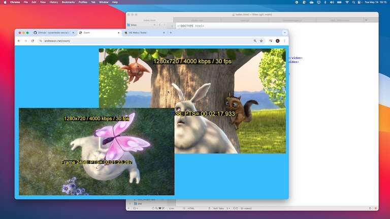
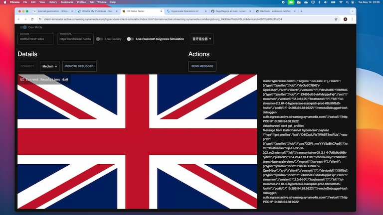
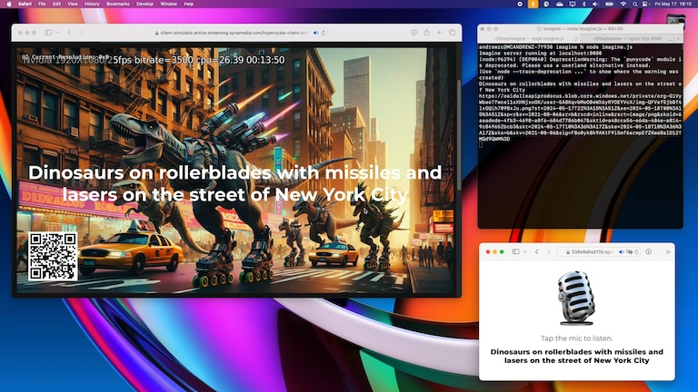
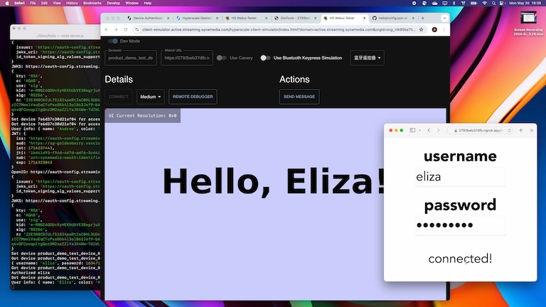
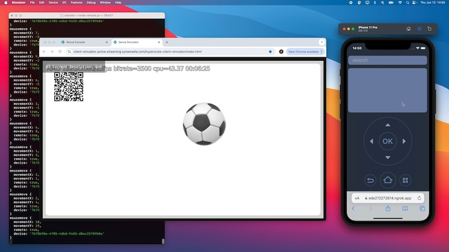

|
Using the Device Simulator
This video tutorial shows how you can use the device simulator to preview how your app will run on a physical cloud connector device. |
 |
Using the Remote Debugger
This video tutorial shows how you can use the Remote Debugger to interact with your cloud connector device and debug your web app. You'll also learn how to use the debugger to run a sample app by changing the URL location. |
 |
Running a Sample App
This video tutorial shows how to run a sample app that lets you switch back and forth between playing video in the web app and streaming video directly to the device. We'll do a deep dive into the code to learn how it works. |
|  | Picture in Picture
This video tutorial shows how to write an app that plays two videos, one picture-in-picture and the other fullscreen, with animations to switch them back and forth. |
|  | Geolocation
This video tutorial shows how to geolocate the viewer’s cloud connector by getting its IP address from the Senza client library. Warning: contains terrible fake accents. |
|  | Speech Recognition
This video tutorial shows how to use a QR code to pair a mobile phone, capture voice input using WebKit speech recognition, send the input to the TV app using Socket.IO, and generate images using OpenAI. |
|  | Device Authentication
This video tutorial shows how to implement device-based authentication, so your users never need to think about usernames and passwords. Alternatively you can show a QR code that lets users sign in on a mobile phone the first time they use a device. |
|  | Smart Remote
This video tutorial shows how to make a smart remote control that runs on a mobile phone. It emulates the buttons on the standard Bluetooth remote, and adds a trackpad for gesture input, a keyboard for text input, and a microphone for voice input. |